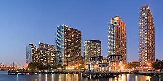
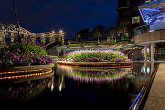
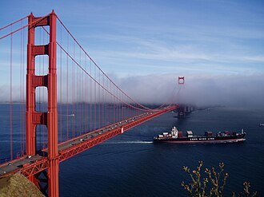
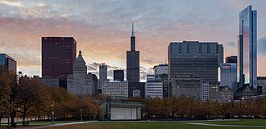
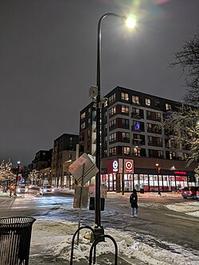
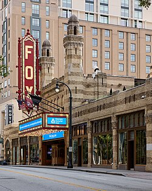
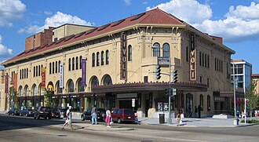

= up and coming locations = popular regional theaters = theater capitals

Source: King of Hearts, Public domain, via Wikimedia Commons
New York City is widely concidered the best spots for theater in the United States. Home to many Broadway and off-broadway theaters this is where the standard for theater is set and the spot many actors dream of working.

Source: Dietmar Rabich, Public domain, via Wikimedia Commons
Los Angeles is often thought of as a spot for film but it also has a thriving theater scene.Productions can involve large celeberties or they can be a chance for new actor to gain exposure at smaller theaters.

Source: Yang Ming Line freighter, Public domain, via Wikimedia Commons
San Fransico is home to a diverse group of theaters. Here, one can find touring broadway performances but also expirimental theater shows. The shows put on here often relect the progessive culture of the area.

Source: Diego Delso, Public domain, via Wikimedia Commons
Chicago is home to many premire theater comanies. There is a mix of more intimate theater shows as well as productions that are broadway-bound.

Source: Themis3000, Public domain, via Wikimedia Commons
Minneapolis is a popular hub for new theater development. It is a high-density area for theater with a strong regional scene. Here you can find new work by artists willing to take creative risks.

Source: Frank Schulenburg, Public domain, via Wikimedia Commons
Atlanta is known for having a mix of popular regional theaters and touring broadway shows. Bold remimaginings of popular shows can be found here as well as productions that emphasize southern history.

Source: SchuminWeb, Public domain, via Wikimedia Commons
The theater in DC often reflects the political conversations happening at the time.along with political shows you can also find revivals of classic shows.